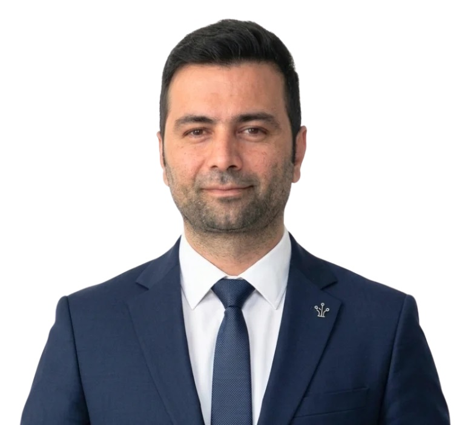

KHOSROW GIVI
IT Operations Manager
PROFESSIONAL PROFILE
IT infrastructure and network professional with 20+ years of hands-on experience supporting and managing servers, networks, and business systems across industrial, professional-services, IT-services, and public-sector environments. Experienced in infrastructure implementation, troubleshooting, backup, security, and day-to-day IT operations. Based in Muscat, Oman.
CORE EXPERTISE
Windows Server SuperMicro HP Servers Storage & RAID Virtualization Backup Cisco MikroTik Routing & Switching VLAN VPN WireGuard Multi-site Networks Firewall Access Control Troubleshooting Technical Support VoIP CCTV Wireless InfrastructureEXPERIENCE
Server procurement, installation, configuration, and infrastructure implementation. Network operations and overall IT infrastructure reliability.
Servers, networks, VoIP, CCTV, access points, and financial and administrative systems, with a focus on stability, security, and backup integrity.
IT infrastructure including servers, networks, VoIP, CCTV, access points, and business applications, with a focus on availability and reliable backup.
Supervised and supported the system, including help desk, troubleshooting, and maintenance.
Supported server infrastructure across 13 regions of Mashhad; deployed and maintained 50+ SuperMicro and HP servers.
Founded and manages an IT services company with a specialist team covering Linux, software development, networking, infrastructure, and server support.